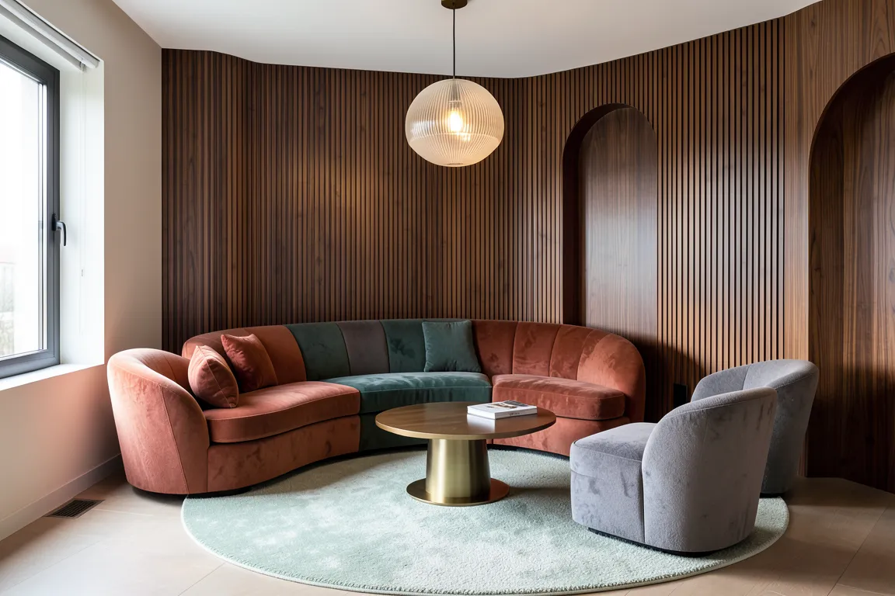

interiør · 2020–present · også: Art deco-revival, Ny deco, Moderne deco
Art deco etter et århundre, gjort mykt. Buede seter i bouclé og fløyel, riflet tre, buer, ribbet glass og børstet messing beholder geometrien og glamouren fra 1920-årene, men i varme, dempede farger og avrundede former.

Kjerneidé
Deco-glamour uten de harde kantene: kurver, ribber og varmt metall gjør luksus myk og personlig.
Designprinsipper
Rund av hver form: buede sofaer, buede speil og døråpninger, pilleformede bord.
Bruk ribber og riller som hovedornament: riflet tre, rørglass, ribbet puss.
Hold paletten varm og dempet: terrakotta, salvie, oker, burgunder og krem med børstet messing.
Plasser én buet sittegruppe midt i rommet, ikke langs veggene.
Bruk ett eller to glamorøse materialer, som fløyel og messing, mot matt puss.
Belys med kule- og soppformede lamper og med buede nisjer lyst opp innenfra.